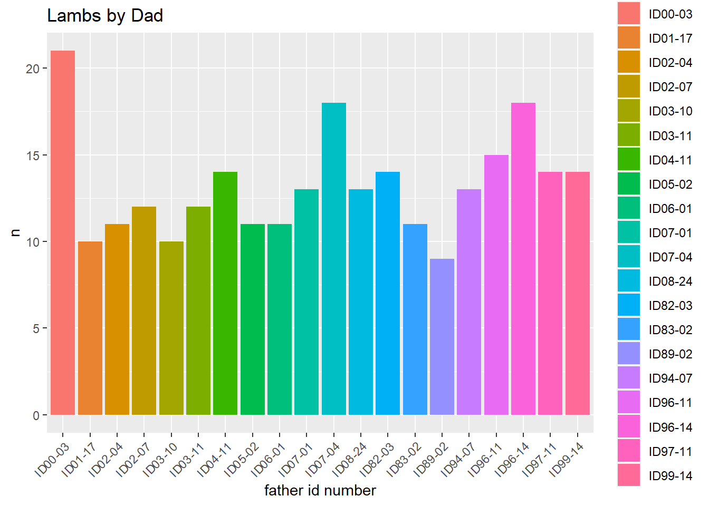

Section 3 Exploring Parentage
Now that I have my database all set up, I can explore the data.
I want to know who were the most successful ewes in reproductive fitness, so I’m going to use the mother_idno to track how many times it shows up for each ewe.
best_moms <- individuals %>%
select(name, mother_idno) %>%
group_by(mother_idno) %>%
tally() %>%
arrange(desc(n))best_best_moms <- best_moms[c(2:21), ]
best_best_moms %>%
ggplot(mapping = aes(x = mother_idno,
y = n,
fill = mother_idno)) +
geom_col() +
labs(title = "Lambs by Mom",
x = "mother id number",
y = "number of lambs",
fill = "mother_idno") +
theme(axis.text.x = element_text(angle = 45, hjust=1))
I’m surprised that there were so many ewes over the years who had more than 10 lambs!
In the future, I would like to examine these data further and parse out how long those lambs lived. It could be that some of these ewes had many lambs, but only a few of those survived to adulthood. I would also like to take into account the family tree below each ewe to see how many grandchildren she had.
Because we have data for both parents of each animal, I can track the reproductive fitness of the rams too.
best_dads <- individuals %>%
filter(!is.na(father_idno)) %>%
select(name, father_idno) %>%
group_by(father_idno) %>%
tally() %>%
arrange(desc(n))
best_best_dads <- best_dads[c(2:21), ]
best_best_dads %>%
ggplot(mapping = aes(x = father_idno,
y = n,
fill = father_idno)) +
geom_col() +
labs(title = "Lambs by Dad",
x = "father id number",
fill = "father_idno") +
theme(axis.text.x = element_text(angle = 45, hjust=1))
One thing to note in this comparison is that there are 83 animals without data for a mother_idno, whereas there are 583 animals without data for a father_idno!
My instinct is that this is due to so many lambs over the years dying before they could be sampled for genetic material. It’s much easier to record a mother for a lamb by observation alone.
The top father on this list is ram 00-03, who was the father of 21 lambs who survived long enough to sample for lineage.
## id_number name
## 1 ID00-02 MAGPIE
## 2 ID00-03 NAVELOur best dad was Navel, and our best mom was Magpie. It’s funny that they were both born in the same year, but I guess that was a good time period to be born into. Now let’s see who their children were.